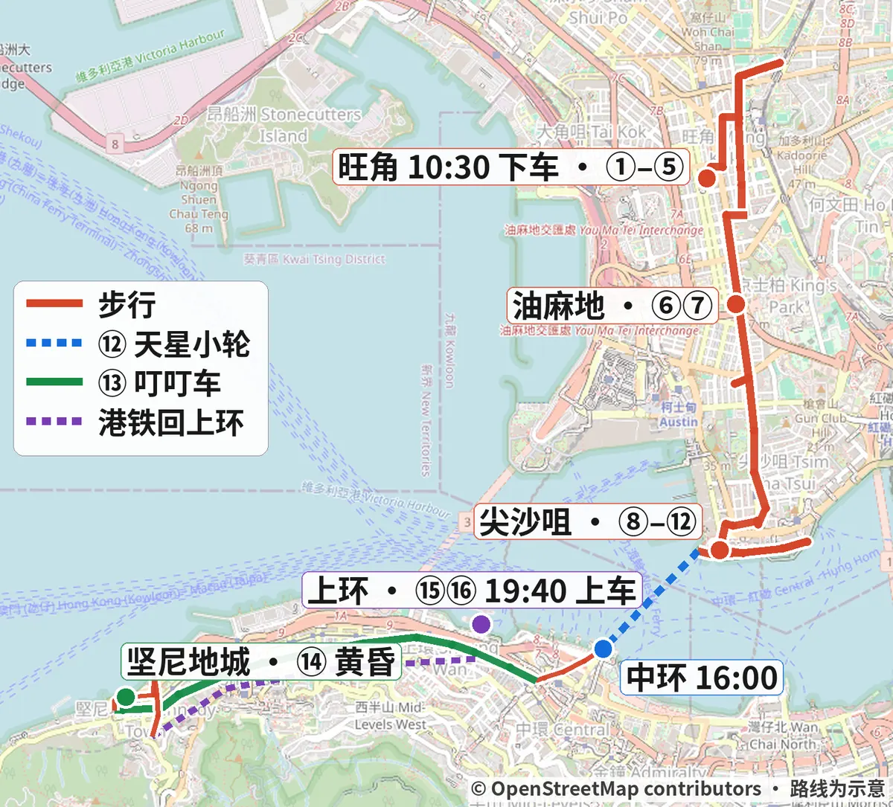

深圳 → 香港 周六一日游
2026 年 11 月 14 日（周六）· 深圳大悦城坐大巴出发，旺角逛吃、尖沙咀看海、坚尼地城看黄昏，上环坐大巴回宝安大仟里。
去程 · 环岛中港通
08:30
深圳大悦城 10 号门 → 旺角朗豪坊
约 10:30 到
约 10:30 到
返程 · 末班车
19:40
上环信德中心 → 宝安大仟里
约 21:30–22:00 到
约 21:30–22:00 到
17:40
香港日落，约 18:05 天黑。黄昏在坚尼地城海旁。
今天只有三个时间不能错过
- 08:10 到大悦城 10 号门。08:30 发车，下一班要等到 14:30。
- 15:45 上天星小轮，最晚 16:00。再晚，到坚尼地城天就快黑了。
- 19:20 到上环信德中心。19:40 是回大仟里的末班。
周六天气：早上有雨，下午转好
香港天文台 11 月 13 日 19:05 的预报：大致多云，有几阵骤雨；初时雨势颇大，有几阵狂风雷暴；日间骤雨减少，下午部分时间有阳光。23–27°C。
带伞。早上的花墟、雀鸟花园在户外，遇雨怎么调整见下面“下雨怎么办”。出门前在“我的天文台”App 再看一眼。
周日的预报是“大致天晴”。如果日期能改，周日天气更好；去程 08:30 和返程 19:40 这两班每天都开。
时间表
点任意一行看这一站的走法、吃什么和历史。到旺角的时间是估计的，晚到就整体顺延，但上面三个时间不变。
上午 · 旺角
- 08:30大悦城上车，深圳湾口岸过关过关后直走，找橙色的环岛中港通柜台
- 10:30旺角朗豪坊下车
- 10:40① 金华冰厅 · 早午餐菠萝油、奶茶
- 11:20② 花墟道
- 11:50③ 园圃街雀鸟花园
- 12:25④ 金鱼街
- 12:45⑤ 女人街 · 西洋菜南街登打士街小吃当午饭
下午 · 油麻地 → 尖沙咀
- 13:35⑥ 油麻地天后庙 · 榕树头
- 13:55⑦ 澳洲牛奶公司（可选）要多花约 35 分钟
- 14:00⑧ 沿弥敦道走到尖沙咀清真寺、重庆大厦、半岛酒店
- 14:25⑨ 1881 Heritage
- 14:45⑩ 尖沙咀钟楼
- 14:55⑪ 星光大道 · 维港15:25 往码头走
傍晚 · 过海，港岛西
- 15:45⑫ 天星小轮 → 中环坐上层
- 16:10⑬ 叮叮车 中环 → 坚尼地城约 35 分钟，沿途是上环、西环老街
- 16:50⑭ 坚尼地城海旁看黄昏17:40 日落；17:50 往港铁站走
晚上 · 上环，回深圳
- 18:15⑮ 港铁回上环，西港城 · 晚饭19:10 结账
- 19:20⑯ 上环信德中心招商局大厦地下 G05，上环站 D 出口
- 19:40大巴发车，深圳湾口岸过关过关后往右，4–7 号车位
- 21:45宝安大仟里 L1 层 3 号门约 21:30–22:00 到
路线图

每一段的小地图在行程页里。全天步行约 10–11 公里，分成很多小段。
遇到情况怎么调整
到旺角晚了，砍哪里
| 到旺角的时间 | 怎么调整 |
|---|---|
| 10:30 前后 | 按计划走。 |
| 11:00 | 不去澳洲牛奶公司；天后庙只在门口看一眼；弥敦道那段改坐港铁（油麻地站 → 尖沙咀站）。 |
| 11:30 | 再从雀鸟花园和金鱼街里去掉一个；尖沙咀只看钟楼和星光大道。 |
| 12:00 以后 | 改走下面的“方案 B”，不去坚尼地城。 |
原则：保住 15:45 的船和 19:20 到上环，其他都可以让。
下雨怎么办
- 早上有骤雨：下车后先进朗豪坊，或者直接去金华冰厅多坐一会儿。雨小了再去花墟（店面多有檐篷）。金鱼街的店都在室内，女人街的摊档有帐篷。雀鸟花园有瓦顶，但地面滑，雨大就跳过。
- 下午还在下：尖沙咀改逛室内：K11 MUSEA、海港城、钟楼旁边的香港艺术馆和太空馆。
- 傍晚还在下：取消坚尼地城。过海后在中环、上环一带逛，早点吃晚饭。
- 雷暴时不要在海边栏杆旁久留。天星小轮一般照常开，上层会飘雨。
- “我的天文台”App 里有雨量雷达图，能看到未来一两个小时雨带的位置。
方案 B：不去坚尼地城，在尖沙咀看日落
适合到得晚、下雨、或者想走得轻松一点。返程车票不用改，还是上环 19:40。
- 上午和下午同主线，但不用赶：可以去澳洲牛奶公司，尖沙咀多逛 K11 MUSEA 和海港城。
- 17:00–17:25 海港城的“海运观点”（海运大厦顶层的露天观景台，免费）。11 月中旬，太阳落到对岸港岛西边的楼群和山后面。
- 17:30 坐天星小轮过海。这时两岸刚亮灯，是一天里最好看的一班船。
- 17:45 中环上岸，坐叮叮车往西 4–5 站到西港城，或者走路约 20 分钟。
- 18:15 上环晚饭，19:20 到信德中心。
其他页面
行程详解
16 站逐个展开：怎么走、看什么、吃什么。历史和文化折叠在每一站下面。
大巴与过关买票、上车点、深圳湾过关步骤、完整班次、赶不上末班车怎么办。
准备与贴士出发前清单、支付、茶餐厅点餐用语、粤语、规矩、费用。
路线参考了百度地图路书 RT31490305“香港秋日到此一游”（旺角逛吃、尖沙咀看海，全程 18.5 km）。分享页只公开了封面路线图，具体点位是按图上位置推断的。